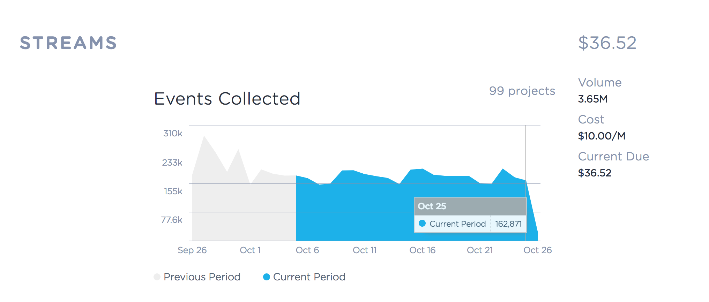

In the first quarter of 2017 Keen introduced a new pricing model, transitioning from tiered pricing, where customers were only billed for the total number of events recorded, to metered billing based on service usage across every aspect of our platform.
The goal of this project was to introduce a new, unified account activity dashboard where account admins can monitor service usage and anticipate their upcoming bills.
This project ran in parallel with several other development efforts that would:
The single biggest risk for this project was to fall out of sync with the other development teams. As delivery dates and data availability changed upstream, so did my team's scope.
Subtle changes in instrumentation or specific data attributes determined whether or not we would be able to plot activity over time, or if the data could be segmented or only shared in aggregate.
Each project team included one of my fellow Product teammates, so we made explicit, excessive communication our friend. I also spent time with our Customer Success and Support teams, who were already preparing similar activity reports by hand, to get a sense of the data density and granularity that our customers would expect.
There are plenty of ways to compose and visualize data like this. It's easy to go overboard and miss the point entirely:
The essential function of this interface is to communicate just enough information that a user can follow the cost curve of their implementation and to see how their decisions translate into real dollars.
Ideally, nothing. But if a problem arises, this is where it'll likely show up first. A sudden spike could mean the customer's dev team shipped a bug that produces excessive or duplicate data. Similarly, a sudden dip could mean an undetected failure or exception made it into in their integration code.
I want our customers to feel confident that their integration is stable and consistent, and that they won't be taken by surprise when their next invoice hits their credit card.
After sketching out several approaches I chose to keep things simple and straightforward with repeating area charts, metrics, and billing breakdowns for each platform feature.
The area charts all display data from the current and previous billing period plotted against a common daily interval x-axis, so users can compare usage and spot deviations over time. Values along the y-axis are heavily rounded. These values can be quite large, and their precise values mean very little in the larger picture of account administration.
This app was architected as a pair of ES6 classes: one that acts as a container for the high-level app state and API request handling, and another for the visualizations that are displayed in each section.
The area chart and metric components are powered by our own open source Data Visualization SDK, which provides a single interface for a wide range of visualization types. We were really happy with the custom styling and formatting of these area charts, and have since reused those components and formatters in other web console apps.
The layout was built with Tachyons, as part of an going effort to modernize our internal tooling and speed up interface development.